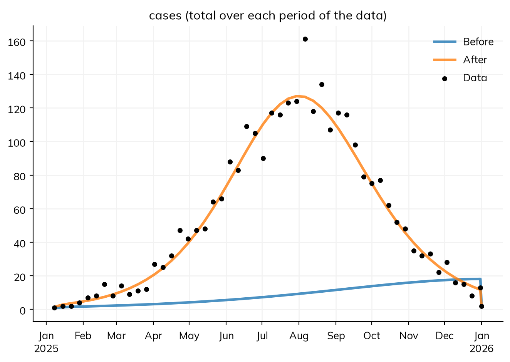
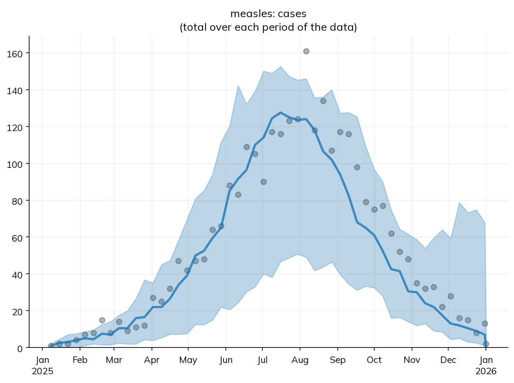

Disease models usually need to be fitted to a particular setting before they can answer “what if” questions about it. Calibration is fitting a model’s parameters to data: finding the values for which the model’s results match what was observed. A model of a measles outbreak, for example, may know how long people are infectious from the literature, but not how fast measles spreads in this particular town, or what share of cases were reported. Those are the parameters to estimate from the data.
There are many approaches to calibration, from tuning parameters by hand to fully Bayesian methods. For many applications an optimization-based approach, which looks for the single set of values that fits best, is enough for a first exploration: it avoids the tedium of tuning by hand, and costs much less than a Bayesian method. The optimizer chooses values, the model is run with them, its results are compared with the data, and a measure of the mismatch tells the optimizer where to look next, until it settles on the values that fit best. When the question needs the uncertainty in the values too, a posterior (the distribution of values consistent with the data) can be fitted instead.
In Starsim, calibration needs two things, each stated where it belongs:
Which parameters are unknown, and the range of values each could take: a parameter with bounds, such as ss.par(1.5, bounds=[0.5, 4]).
The data, attached to the sim, in columns named like the results they measure.
sim.fit() then fits every parameter that has bounds to every result that has data. There is no function to write that puts each value into the model, and none that pulls out the results to compare: the model already knows where each parameter is used and what each result is.
This page covers the options. The calibration tutorial goes through one fit step by step; Parameter identification is about whether the data can determine the parameters at all; Gradients covers posteriors and profile likelihoods; Fit diagnostics covers what to check afterwards; and Optimization uses the same machinery to allocate a budget.
The smallest example
The model is a measles outbreak in a town of 100,000 people, 90% of whom are already immune by vaccination. People are infected (S to E), become infectious about 10 days later (E to I), when the rash appears, and recover after about 8 days (I to R). The reported cases are a share of the people whose rash appears, report. Two parameters are unknown: the transmission rate beta and the share reported, report:
import starsim as ssS, E, I, R = ss.states('S E I R')beta = ss.par(1.5, bounds=[0.5, 4]) # Transmission rate per day: unknownreport = ss.par(0.3, bounds=[0.05, 1]) # Share of cases reported: unknowninfection = S >> E @ beta*Ionset = E >> I @ ss.days(10) # The rash appears about 10 days after infectionrecovery = I >> R @ ss.days(8) # Infectious for 8 days on averagecases = ss.outcome(report*onset) # Reported cases: a share of the onsetsmeasles = ss.Disease(infection, onset, recovery, cases, init=dict(I=0.0001, R=0.9))pars =dict(total_pop=100_000, start='2025-01-01', stop='2026-01-01')
Starsim kernels: Rust, OUT OF DATE (built before its source last changed, so results may be wrong): run "./build" in starsim/solvers/rust/
The value given to each parameter (1.5 and 0.3) is where the search starts, and the bounds are the range it searches.
To check that calibration works, it helps to fit data for which the right answer is known. to_data() draws data from a run of the model, as if it had been observed: here, weekly reported cases from a run with beta = 1.9 and report = 0.5, as counts with random (Poisson) noise. The true sim gets its own random seed, rand_seed=2, so that its noise is not shared with any run being fitted:
truth = ss.Sim(measles, pars=dict(beta=1.9, report=0.5), rand_seed=2, **pars)truth.run()data = truth.to_data('cases', resample='week')data.head()
Sim: measles, 100,000 people, as an ODE, 2025-01-01 to 2026-01-01
measles: R0 = 15.2 (R = 1.52 at the start, with 10% susceptible), with 10 infectious at the start
Done in 0.0032 s; measles: 5,856 infections; at most 298 infectious, on 2025-08-05
date
cases
0
2025-01-08
1
1
2025-01-15
2
2
2025-01-22
2
3
2025-01-29
4
4
2025-02-05
7
With real data, the data would be read from a file instead (see below). Now attach the data to a sim of the same model, and fit:
Searching on a log scale: report
Fitting by nelder-mead (2 fitted parameters, for which it is faster than gradients; override with method=)
Converged: the best two of 3 searches, from points of the scan that are apart, ended within 9.6e-05 of each other (objective values 0.09553 at beta=1.9, report=0.4832; 0.09553 at beta=1.9, report=0.4833; 0.09553 at beta=1.9, report=0.4833; 299 evaluations)
The goodness of fit is 0.09553 at the best values and 0.858 at the initial values
The fit prints which method it used and why, and whether it converged. fit.summarize() shows the values found, with the goodness of fit before and after:
fit.summarize()
Fitted 2 parameter(s) by nelder-mead, with 320 evaluations
Goodness of fit: 0.858 before, 0.09553 after
Converged: the best two of 3 searches, from points of the scan that are apart, ended within 9.6e-05 of each other (objective values 0.09553 at beta=1.9, report=0.4832; 0.09553 at beta=1.9, report=0.4833; 0.09553 at beta=1.9, report=0.4833; 299 evaluations)
par
initial
best
low
high
0
beta
1.5
1.899582
0.50
4.0
1
report
0.3
0.483202
0.05
1.0
Both values are close to the ones the data was made with (1.9 and 0.5). The fitted model against the data:
fit.plot()

The plot compares what the fit compared: the model’s cases summed over each week of the data, before and after the fit.
The original sim is not changed. The fit holds:
Attribute
What it is
fit.pars
The best values, which can be passed to ss.Sim(pars=...)
fit.sim
The calibrated sim: a copy of the original with the best values, already run
fit.before
The sim with the starting values, already run
fit.table
Each parameter’s starting value, best value, and bounds
Every parameter with bounds is fitted, wherever it is: a rate, a share, a duration, a parameter of a network or an intervention. A duration’s bounds are in its own unit, e.g. ss.par(ss.days(8), bounds=[5, 12]) for between 5 and 12 days.
pars= fits only the parameters named, keeping the others at their values: sim.fit(pars=['beta']).
Wide positive bounds (where the high end is 10 or more times the low end) are searched on a log scale, since going from 0.05 to 0.1 matters as much as going from 0.5 to 1. The fit says which parameters it searches this way.
A prior, ss.par(1.5, bounds=[0.5, 4], prior=ss.normal(2, 0.3)), is used by the methods that use likelihoods: a best fit is then the most probable values rather than the maximum likelihood, and a posterior uses it as its prior. Without one, the prior is uniform over the bounds.
In a module written as code, a parameter given as ss.par is fitted and its code sees the value, including a value in a dict parameter, e.g. cin_fn=dict(k=ss.par(0.3, bounds=[0.1, 0.5])), fitted as cin_fn.k. A parameter with the same name in several modules is fitted with its module’s name, e.g. hpv16.rel_beta and hpv18.rel_beta; pars= and ss.Sim(pars=...) take either name.
A modifier’s amount, ss.modify(hiv.rel_sus, multiply=ss.par(2.7, bounds=[1, 4])), is fitted as multiply (or with the modifier’s name, if it is a parameter of a declared disease).
A parameter whose value is an array, with bounds for each element, has each element fitted, as curve[0], curve[1], …, except those whose low and high bounds are equal, which stay as they are: ss.par(np.array([0.1, 0.4, 0.2]), bounds=[np.array([0, 0, 0.2]), np.array([1, 1, 0.2])]). A time series with bounds, ss.par(ss.timeseries(days, [0.3]*10), bounds=[0.05, 1]), has each of its values fitted in the same way, named by its times (beta[0], beta[14], …), and fit.pars has the time series whole. Either has a gradient for each value, so a deterministic model is fitted by gradients. penalty= adds a function of the values to what a best fit minimizes, e.g. to keep a curve smooth: sim.fit(penalty=lambda pars: 10*np.sum(np.diff(pars['curve'], 2)**2)).
A value that isn’t a parameter
A value set in code, such as a setting of an intervention that its constructor doesn’t take, or anything the model works out from it, is fitted by writing a function that sets it, with the value as a keyword argument given as ss.par, and giving the function as a module. A function given as an intervention is called at every step, with its keyword arguments as the module’s parameters:
The value is a parameter like any other: fit.pars.symp_prob, ss.Sim(pars=dict(symp_prob=0.2)), sim.sensitivity(), and ss.parallel(sim, pars=dict(symp_prob=[0.1, 0.2])) all find it by name. A module added after the sim was made (e.g. sim.pars.analyzers += my_analyzer) is kept by sim.new(), and so by the runs of a fit.
The data
The data has a time column (date, year, t, or time; an integer year is a calendar year) and one column for each data series, named like the result it is compared with: here cases. With several modules, a column that could match more than one result is named with its module, e.g. measles.cases. Any result can have data, including an analyzer’s (by_age.cancers_0_15), a result nested deeper in sim.results (hpv.genotype.cancers), and a column of a result with columns (sis.infection.alpha), so gof= is needed only for targets worked out from the results, such as a share.
The data need not be on the model’s time step, and nothing needs to say how to line the two up, since each result knows what kind of quantity it is:
A flow, like reported cases, is summed over each interval of the data: weekly data is compared with each week’s total.
A stock (like the number infectious) or a ratio (like prevalence) is compared with the model’s value at the data’s time.
Data by calendar year is compared over the year it names: a flow summed over it, and a stock or ratio averaged over it.
data= takes a dataframe or a file name. Real files rarely arrive with matching headers, so ss.simdata() renames columns on the way in, and can ignore the columns not needed:
A column that matches no result gets a note listing the closest result names when the sim is initialized, and is an error when the fit compares the data with the results, so a typo in a header is caught. weights= gives series different weights, e.g. sim.fit(weights=dict(cases=1, deaths=5)).
Measuring the fit
Without a likelihood, the measure of fit is the normalized absolute error: for each data series, the mean absolute difference between the model and the data, divided by the mean of the data. It needs no assumptions about the noise in the data, and puts series of different sizes on one scale. gof='rmse' uses the root mean squared error instead, and gof= can also be a function of the sim that returns the mismatch to minimize (lower is better), e.g. to bring data of its own:
def peak_error(sim):""" How far the model's peak week is from the observed peak, in weeks """ weekly = sim.results.measles.cases.resample('week')returnabs(weekly.values.argmax() - data.cases.values.argmax())fit = sim.fit(gof=peak_error)
A likelihood says how the data vary around the model’s value: the model’s value is the mean of the distribution, and the likelihood supplies the rest. It can be declared on the outcome, where it is used by every fit, or given to the fit by the name of the data series:
cases = ss.outcome(report*onset, likelihood=ss.poisson()) # On the outcomefit = sim.fit(likelihood=dict(cases=ss.nbinom(n=10))) # Or for one fit
Counts that vary more than a Poisson, with n the dispersion (a smaller n is more variable); n can itself be an ss.par with bounds, and is then fitted too
ss.normal(scale=...)
Continuous values, with the standard deviation scale
ss.lognorm_ex(std=...)
Positive continuous values, with the standard deviation std
ss.binom(n=...)
The number who test positive out of n people surveyed (the data column holds the number positive), with the model’s value, a share such as a prevalence, as the probability
When every data series has a likelihood, the fit maximizes the sum of their logs (the maximum likelihood estimate), and the methods that give a posterior can be used.
By default a fit is a best fit (a single set of values), by a method that suits the model, which sim.fit() prints with its reason. A posterior (the distribution of values consistent with the data) is always asked for by name:
The model
The default method (a best fit)
A posterior, by name
Deterministic (an ODE)
'l-bfgs-b', a gradient-based optimizer; 'nelder-mead' for one or two parameters, or when the model can’t be differentiated
'nuts' (the No-U-Turn sampler), given a likelihood for every series
Stochastic compartmental
'optuna'
'pmcmc' (particle MCMC), given a likelihood for every series
Agent-based
'optuna'
'abc-smc' (approximate Bayesian computation), which needs no likelihood
'powell' and 'slsqp' (two more methods of scipy.optimize.minimize) can also be given, as can 'if2' (iterated filtering, for a stochastic compartmental model). Fitting methods compares them all, with the settings of each and an example. A list, such as method=['optuna', 'nelder-mead'], runs each method in turn, each starting from the best values the one before found, and stops at a method that doesn’t converge.
The gradient-based methods and their posteriors are covered in Gradients.
A stochastic model
A stochastic model gives a different result on each run, so each set of values gives a noisy score. Starsim fits a stochastic model with Optuna, a library for searching over parameters, which tries values, scores them by running the model, and uses the scores to choose where to try next. Here is the same model as a stochastic compartmental model (a chain binomial, in which the number of people who move between states each day is random):
Searching on a log scale: report
Fitting by optuna (a stochastic sim; override with method=)
Scoring each point by the mean of 4 runs, with fresh seeds at each point (override with n_runs= and reseed=)
Not converged: the best score improved by 7.5% over the last quarter of the 100 trials; try more trials (n_trials=)
The goodness of fit is 0.2447 at the best values and 0.8699 at the initial values
Fitted 2 parameter(s) by optuna, with 100 evaluations
Goodness of fit: 0.8699 before, 0.2447 after (the mean of 4 runs)
Not converged: the best score improved by 7.5% over the last quarter of the 100 trials; try more trials (n_trials=)
spread_lower and spread_upper: the range of the best 10% of the trials, an indication of the uncertainty only, not an interval
par
initial
best
low
high
spread_lower
spread_upper
0
beta
1.5
1.924731
0.50
4.0
1.776167
2.011071
1
report
0.3
0.425377
0.05
1.0
0.385603
0.466946
The estimates are less precise than those of the ODE: each score is noisy, so the search can settle anywhere in a region of similar scores, and a fit with another rand_seed gives somewhat different values (in particular of report). Fit diagnostics shows how to check how much this matters.
The options that matter for a stochastic fit:
n_trials= is the number of sets of values to try (100 by default). Use more for more parameters.
n_runs= is the number of runs that each set of values is scored by: 4 by default for a stochastic compartmental model, and 1 for agents. Each trial uses fresh random seeds, so that the search averages over chance rather than fitting one run’s luck; the best fit is then the trial among the best tenth whose neighbors score best, rather than the luckiest. reseed=False scores every trial with the same seeds instead, e.g. for a rare outcome, where fresh seeds let the search favor values whose runs were lucky.
rand_seed= makes the fit itself reproducible.
n_workers=4 runs the trials in 4 processes at once, and storage='fit.log' keeps the trials in a file, so that calling fit() again with the same file carries on where it stopped.
fit.study is Optuna’s study, for its plots, e.g. optuna.visualization.plot_param_importances(fit.study).
Agents are fitted the same way, e.g. ss.Sim(measles, data=data, n_agents=20_000, **pars).fit(n_trials=200). With agents each run is slower, and with few people in the model the noise is larger, so a fit usually needs more trials.
fit.sim is one run with the best values. Since the model is stochastic, it is more useful to run it many times, and see whether the data lie within the range of the runs:
msim = fit.sim.run(n_runs=20)
msim.plot('measles.cases')

The plot shows the median and 95% of the 20 runs, as weekly totals, against the data.
Using the fit
The calibrated sim is the starting point for scenarios. sim.new() makes a new sim from the same inputs, with whatever is given changed; from fit.sim, that includes the fitted values. Here, a vaccination campaign on 1 April that reaches half the town, compared with none:
These runs use the best values only, so their spread is chance alone, not the uncertainty in the fitted values. For projections that carry that uncertainty too, fit a posterior and use fit.project(); see Gradients.
Which parameters matter
Before calibrating, it helps to know which parameters the results depend on at all, since a parameter that does not matter cannot be fitted either. sim.sensitivity() needs no data: it samples the parameters over their bounds, runs the model at each sample, and gives the partial rank correlation of each parameter with a summary of each result. Near 1 or -1, the result goes up or down with the parameter (with the others held fixed); near 0, it doesn’t depend on it:
sens = sim.sensitivity(n=50, verbose=False)sens[['measles.I peak', 'measles.cases total']]
measles.I peak
measles.cases total
beta
0.995422
0.837401
report
-0.001718
0.727806
Allocating a budget
The same machinery answers a different question: given the spending on each program as parameters of the model, how should a fixed total be divided between them to make a result as small (or as large) as possible? ss.fit.optimize() does this; see Optimization.
Pitfalls
A best value at a bound. The fit warns (AtBound) when a best value is at the edge of its bounds: the best value may lie beyond it, so widen the bounds, or check that the parameter means what you think it does.
Parameters the data can’t tell apart. Two parameters that only ever appear multiplied together (such as a contact rate and a chance of infection per contact) can’t be fitted separately; the fit notes this. See Parameter identification.
A lucky trial. In a stochastic fit, the best trial may simply have been a lucky run. The fit reruns the best values with the same seeds, and says so if they then score worse than the starting values; use more trials, or more runs per trial (n_runs=).
A column that matches nothing. Data columns are matched to results by name; a column that matches no result is an error when fitting, with the closest names suggested.
Too few runs to judge. One run of a stochastic model, with the best values, says little about whether the model fits; compare the data with many runs, as above.
More checks are in Fit diagnostics. How the fitting works, and how the method is chosen, is explained in Randomness.